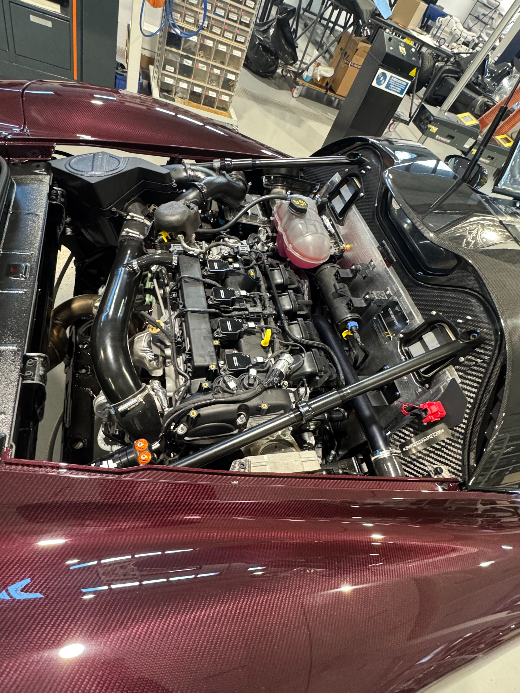

Some commentary focuses on the fact that the engine is based on a 2.3-liter Ford EcoBoost block. That detail alone does not fully explain how the powertrain functions within the Dallara Stradale.
The engine was extensively reworked and calibrated with support from Bosch. In this application, it produces 400 horsepower and 369 lb-ft of torque in a car with a dry weight of approximately 1,885 pounds. The combination of relatively low mass, strong low-end torque, responsive throttle mapping, and linear power delivery gives the Stradale a high power-to-weight ratio while retaining the serviceability of a widely used engine architecture.

At a Glance
Engine and aerodynamics
- Powertrain
- 2.3-liter turbocharged inline-four, Bosch calibrated
- Peak power and torque
- 400 hp and 369 lb-ft
- Orientation
- Transverse mid-engine
- Base dry weight
- 855 kg, approximately 1,885 lb
- Maximum downforce
- Up to 820 kg, approximately 1,808 lb
01
The transverse layout
The transverse mid-engine installation reflects an engineering approach Dallara has used in other notable performance cars, including the Lamborghini Miura and Lancia Stratos.
Mounting the engine and six-speed transmission transversely behind the cockpit helps keep the powertrain package compact and concentrates mass near the center of the vehicle. This can reduce polar moment of inertia and support quicker directional changes. The shorter drivetrain layout also leaves more space at the rear of the car for aerodynamic components.

Aerodynamic flow visualization illustrating how airflow and pressure are managed around a racing chassis.
02
Aerodynamics and packaging
The compact inline-four engine contributes to the Stradale's aerodynamic layout by reducing the amount of space required for the powertrain behind the cockpit.
That packaging allows more room for the rear diffuser and underbody airflow channels. As air moves beneath the car and expands through the diffuser, pressure under the vehicle is reduced, which generates downforce. Unlike added physical weight, aerodynamic downforce increases tire loading without increasing the car's mass or inertia.
Dallara states that the Stradale can generate up to 820 kg of downforce in its highest-downforce configuration. The company also reports lateral acceleration exceeding 2 g under appropriate conditions. These figures depend on speed, aerodynamic configuration, tires, surface conditions, and testing methodology.
The engine's role in the vehicle is therefore not limited to power output. Its dimensions and orientation also support the packaging and aerodynamic priorities of the overall design.
Private Sourcing